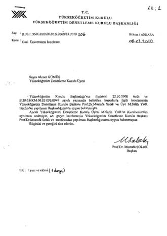

Giresun Üniversitesi
Giresun Üniversitesi ile ilgili YÖK’e gönderilen soruşturma raporunda, bir cihaz için kurulumu yapılmadan 664 bin 34 TL ödendiği, Kalkınma Bakanlığı’nın 83 kalem makine teçhizat alımı için tahsis ettiği 2 milyon 832 bin TL’lik ödenekle sadece 9 kalem makine alındığı iddialarına yer verildi.
“Giresun Üniversitesi Merkezi Araştırmalar Labora-tuarı”na teçhizat alımlarında, kurulumu yapılmadan ve hiçbir yasal sürece uyulmadan çok büyük ödemeler yapıldığı ortaya çıktı. Dönemin rektörlüğünün de bilgisi dahilinde olduğu ifade edilen raporlarda ve soruşturma tutanaklarında yer alan ifadeler oldukça dikkat çekici.
Giresun’da rektör yardımcısının da karıştığı tespit edilen skandala ilişkin yer alan yolsuzluklar şöyle:
- Kalkınma Bakanlığı’nın 83 teçhizat için üniversiteye ayırdığı 2 milyon 832 bin TL, sadece 9 kalem teçhizatı alımı için kullanıldı.
- 664 bin TL ödenerek alınan cihaz yer darlığı nedeniyle kurulamayıp, fakülte boşluğuna konularak çürümeye terk edildi.
- Alınan teçhizatlara ilişkin eğitimin tüm masraflarının ihale gereği firma tarafından karşılanması gerekirken, bunun aksine kimi öğretim üyelerinin üniversiteden para alarak bu iş için yurtdışına çıktığı tespit edildi. Bu sayede açık bir haksız kazanç sağlandı.
- Öğretim üyeleri tarafından hazırlanan şartname maddeleri ile ihaleyi alan firmaların sundukları tekliflerde yer alan ifadelerin bire bir örtüşmesi.
- Mustafa Türken, Halil İbrahim Uğraş, Murat Taş, Serkan Soylu, Saim Topçu ve Aysun Türkmen, ilgili yolsuzlukta suçlanan isimler. (Soruşturmada savunması alınan akademisyenlerin tamamı, sürecin üniversite rektörlüğünün bilgisi dahilinde geliştiğini ve herhangi bir yolsuzluk bulunmadığını öne sürdü.)
